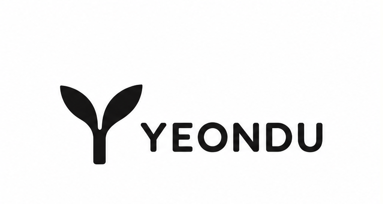
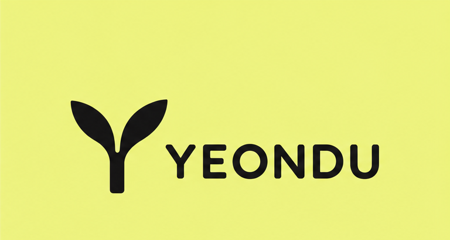
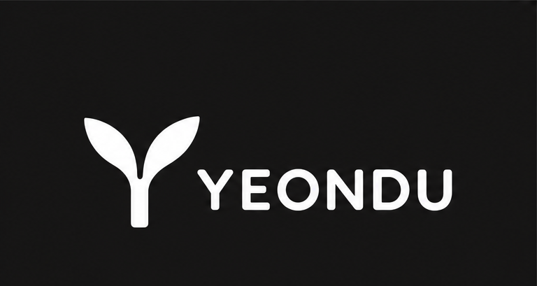
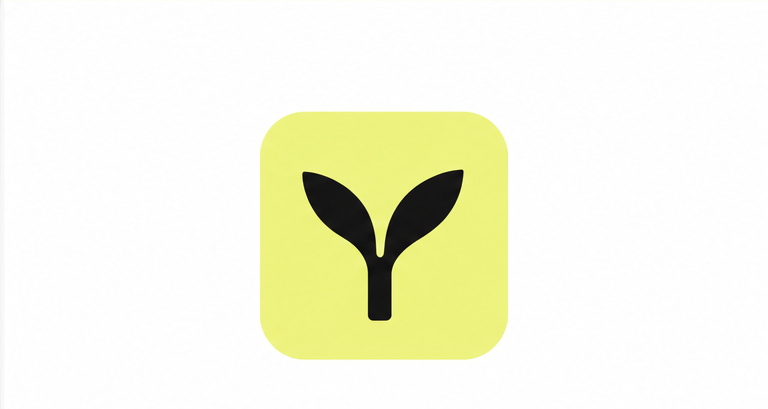

여린 새싹처럼, 나만의 속도로
연두는 짙은 초록이 되기 전, 막 돋아난 새잎의 색입니다. 한 번에 바뀌지 않아도 괜찮다는 마음을 하나의 심볼에 담았습니다.
BI 로고
두 장의 떡잎이 Y자 줄기에서 피어나는 심볼과 워드마크의 조합입니다. 배경에 따라 아래 세 가지 버전을 사용합니다.




로고에 담긴 뜻
01
두 장의 떡잎
막 땅을 뚫고 나온 새싹의 첫 잎입니다. 과하지 않게, 나에게 맞는 변화가 시작되는 순간을 뜻합니다.
02
Y자 줄기
YEONDU의 머리글자 Y와 줄기가 하나로 이어집니다. 이름과 상징이 따로 놀지 않도록 설계했습니다.
03
둥글고 단단한 글자
모서리를 둥글게 다듬은 굵은 워드마크로 편안함과 신뢰감을 함께 전합니다.
브랜드 컬러
모노톤에 연두 한 가지만 더합니다. 연두는 배경으로만 쓰고, 그 위의 글자와 심볼은 항상 검정을 씁니다.
Lime
#EFF382
Ink
#151515
White
#FFFFFF